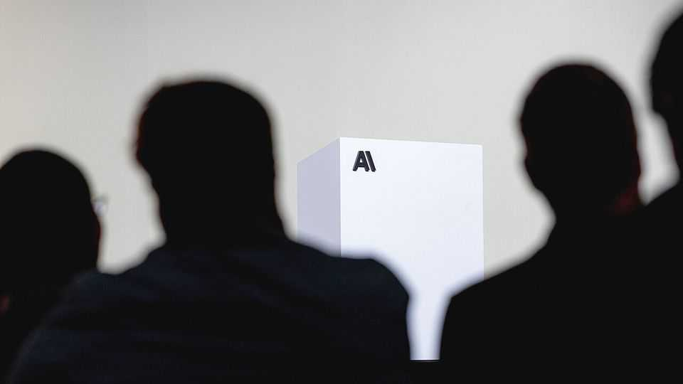

Business

Oct 1st 2026
Details emerged about Anthropic’s IPO prospectus, which it has circulated among key investors. According to Reuters, revenue at the firm reportedly rose to $4.6bn last year, and it recorded a net loss of $42bn, $34bn of which was an accounting charge. It aims to spend $518bn in the near future on cloud infrastructure and other investments. Anthropic could be valued at $2trn when it lists on the stock market, which would smash the record $1.8trn valuation set by SpaceX only in June. The IPO is not expected until after America’s midterm elections in November. It counted “existential risks to humanity” among the hazards facing its business.
Sam Altman, the boss of OpenAI, said his firm’s already-delayed IPO would not take place until it had tackled concerns about the safety of its technology. OpenAI confirmed that it had withheld the release of GPT-6.1 Astra, after its new model displayed high levels of deception during internal tests. It also suspended trials of other models. The firm has admitted that its agents breached dozens of systems, including some governmental ones.
Confronting worries about AI safety, Nvidia launched an Open Agent Safety Platform that allows companies to track the activities of their AI agents. Jensen Huang, the chipmaker’s boss, is less concerned about the threat from AI to humanity than his fellow tech titans, saying recently that it is up to AI companies to ensure their models are safe and under control. Meanwhile, Nvidia expanded its share buy-back programme by $150bn, taking its total buy-back plan to $235bn, the biggest-ever in corporate America.
AMD struck an agreement to acquire World Labs, a startup, in an $8.2bn deal. World Labs was co-founded by Fei-Fei Li, a leading AI researcher and professor at Stanford University, to develop spatial models that investigate how the three-dimensional physical world works for application in areas such as robotics and gaming. AMD’s acquisition is the latest instance of a chipmaker evolving its business towards the development of advanced AI frontier models.
The sell-off in bond markets continued. The yield on ten-year US Treasuries was over 5.3%, its highest level since 2002. British 30-year gilts crossed 6% and French spreads over German Bunds were back to euro-crisis levels. Donald Trump didn’t help by renewing his call for Jerome Powell to step down from the board of governors at the Federal Reserve, which revived fears about the independence of the central bank and the direction of inflation.
Shein’s first earnings report since listing on the stock market in early September disappointed investors. Adjusted net profit fell by 67%, year on year, and revenue was virtually flat. The ultra-cheap retailer’s share price plunged after it announced its results, giving it a market value of around $17bn, down from $26bn at its IPO.
The German government was reportedly seeking assurances from UniCredit, an Italian bank, about its commitments in any takeover of Commerzbank, Germany’s second-biggest lender, such as keeping its listing in Frankfurt. The government has so far resisted UniCredit’s advances on Commerzbank, but has moderated its opposition to a deal. The Italians are preparing to take control as early as January next year, according to reports, and plan a big restructuring of the bank, including ditching some international business.
Tata Trusts, the charitable group which owns 66% of Tata Sons, proposed merging the holding company with two subsidiaries to avoid a forced public listing. The proposal, led by Noel Tata, a scion of the Tata family, challenges the board’s recent decision to proceed with an IPO.
SpaceX’s Starship rocket marked a milestone by reaching orbit for the first time, despite a failure in one of its three main engines, which cut short its flying time. The mission deployed 26 next-generation Starlink V3 satellites, which increase capacity and data density for Starlink’s broadband service.
Walmart promised its customers that it would not use AI to “set different prices based on who you are or the time of day”. The supermarket chain was responding to concerns about the prospect of retailers using AI to determine a price based on a shopper’s individual data. The Federal Trade Commission has warned recently that businesses that don’t tell consumers their data is being used this way may be breaking the law. Dynamic pricing has long been in use, but now McDonald’s and other fast-food chains are reportedly experimenting with sophisticated algorithms to decide prices based on local demand, so a Big Mac could cost more in one outlet than another nearby.